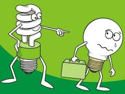
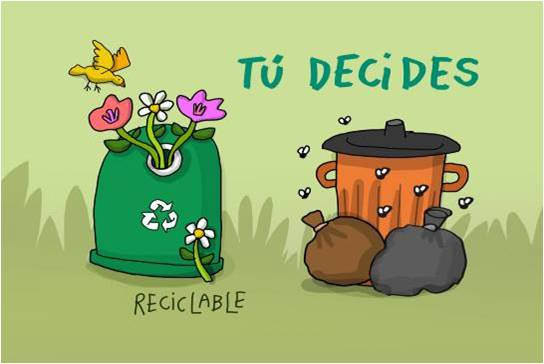

Medidas preventivas del cuidado del ambiente
Hoy en día, el efecto invernadero y el recalentamiento global se han convertido en problemas de impacto mundial; debido al mal uso que el hombre ha hecho de los recursos naturales. En este sentido, las empresas han dedicado parte de sus esfuerzos a la implementación de políticas ambientales y a la realización de actividades que tienen influencia en la preservación de la naturaleza de las comunidades cercanas.
1.- Desconectar los aparatos electrónicos cuando no se estén usando. Por ejemplo: Computadoras, microondas, aires acondicionados, fotocopiadoras, impresoras, etc…
2.- Apagar las luces cuando se esté ausente de la oficina. Utilizar focos ahorradores de luz; éstos son más caros que los normales; pero duran hasta 8 veces más y consumen la quinta parte de la energía para dar la misma cantidad de luz que un bombillo normal.
3.- Procurar utilizar pilas recargables o enchufar los aparatos a la red eléctrica. Si es inevitable el uso de pilas desechables, éstas no deben estar revueltas entre la basura. En lugar de ello, sepárelas y colóquelas en un recipiente aparte; ya que contienen sustancias químicas que son tóxicas.
4.- Usar racionalmente el agua. Utilizar el agua caliente sólo de ser necesario. Instalar un filtro o garrafón de agua para ahorrar las botellas. No dejar las llaves abiertas para evitar el despilfarro, arreglar las goteras, reparar inmediatamente cualquier fuga y de ser posible reinvertir el agua para otras actividades.
5.- Manejar menos y utilizar el transporte público. Otra buena opción, es caminar o usar otros medios de transporte que no contaminen. En caso de que sea imprescindible salir en el automóvil para ir al trabajo, compártelo con otros compañeros o vecinos.
6.- Preguntarse si realmente se necesita un producto, antes de comprarlo. Cualquier consumo que no sea imprescindible es anti-ecológico. En caso de que este artículo sea indispensable, procure adquirir productos que contaminen menos el medio ambiente.
7.- Reflexionar antes de arrojar cualquier cosa a la basura y verificar si se puede reutilizar, reciclar, reparar o si puede ser útil para otra persona.
8.- No derrochar artículos desechables como: servilletas, pañuelos, papel higiénico, etc…
9.- Sustituir los vasos de plástico y cartón, los cuales son desechables, por tazas de cerámica o porcelana o vasos de vidrio que se puedan volver a emplear en otra ocasión.
10.- Evitar usar envolturas de plástico y/o aluminio (Latas); en su lugar, utilice recipientes reusables o envases retornables.

Beneficios de cuidar el medio ambiente
Hay muchos beneficios en cuidar el medio ambiente, como por ejemplo ahorrar energía o dejar de contaminar. A continuación les dejare una lista de estos beneficios:
Ahorrar energía.
Reducir la contaminación del aire.
Reducir la contaminación del ambiente
Ayudar a vivir en un ambiente más limpio y sano.
Reducir el crecimiento del agujero de la capa de ozono.
Dejar de extinguir animales.
Ampliar el hábitat de animales.
